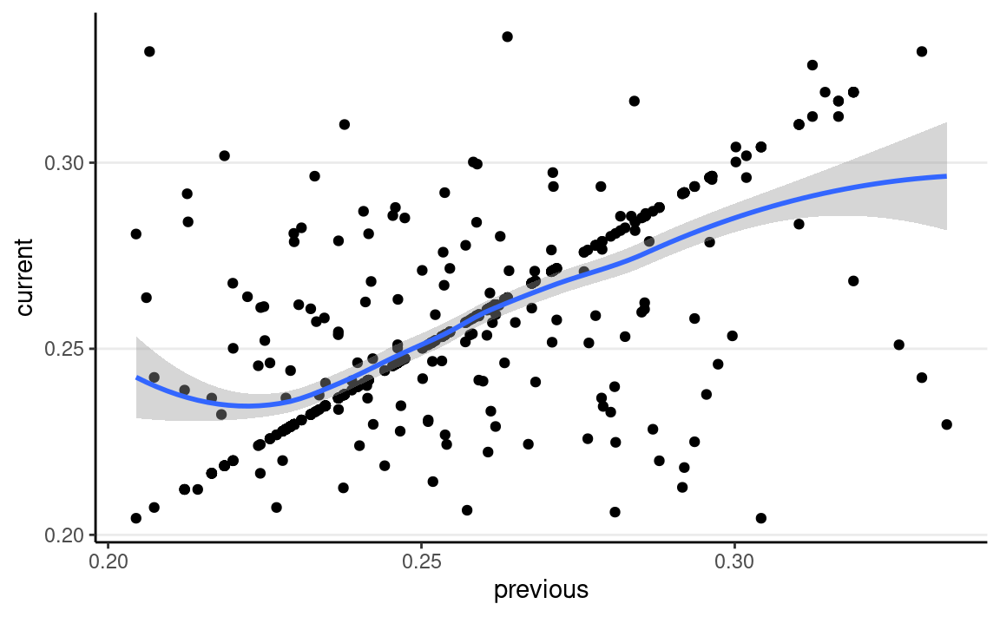

Previously, we have seen a few examples with Bayesian inferences where the posterior distribution concerns only one parameter, like the Bernoulli and the Poisson model. We have also discussed the grid approximation and the conjugate prior approaches to obtain/approximate the posterior. In this note, we will discuss the simulation method and explain why we need a special class of methods called Markov Chain Monte Carlo. This note will consider mainly the Metropolis algorithm, which subsumes many other commonly used MCMC algorithms. Therefore, it is beneficial to build a solid foundation on what the basic version of the Metropolis algorithm is. You will also write your own Metropolis sampler to understand how it works.
But first, lets talk about what the Monte Carlo method is.
In a previous example, we see that with a conjugate prior (e.g., Beta), the posterior distribution is from the same distributional family (Beta). Thus, we can easily draw simulation samples from the posterior distribution using R. The more samples we draw, the better we can approximate the posterior distribution based on the simulation samples. It is the same logic to get a large sample to precisely describe our population; here, the posterior distribution, determined using mathematics, is considered the population, and the simulation draws are, well, a sample from that population. With 10,000 or 100,000 samples (draws), we can accurately describe our population (posterior).
For example, if we know that the posterior is a \(\mathrm{Beta}(15, 10)\) distribution,
consider drawing 10, 100, 10,00, and 10,000 samples from it using the R
function rbeta, and contrast the density estimated from the
samples (in the histogram) with that of the actual Beta distribution (in
red).
# Set the `seed` (initial point) for pseudo-random number generation algorithm
set.seed(2)
num_draws <- c(10, 100, 1000, 10000)
beta_draws <- tibble(
th = rbeta(sum(num_draws), shape1 = 15, shape2 = 10),
sam = rep(paste(num_draws, "samples"), num_draws)
)
ggplot(beta_draws, aes(x = th)) +
geom_histogram(aes(y = ..density..)) +
stat_function(
fun = dbeta, args = list(shape1 = 15, shape2 = 10),
col = "red"
) +
labs(x = expression(theta)) +
facet_wrap(~sam)
The figure below shows the values when drawing 100 samples in time order:
beta_draws %>%
filter(sam == "100 samples") %>%
rowid_to_column("iter") %>%
ggplot(aes(y = th, x = iter)) +
geom_line() +
labs(y = expression(theta))
So we can say that, when the number of posterior samples is very large, the sample distribution converges to the population density. The Monte Carlo method will work for many situations. Note, of course, the number of simulation samples, \(S\), is controlled by the analysts; it is different from the sample size of the data, which is fixed and is a property of the observed data.
In addition, most descriptive statistics (e.g., mean, SD) of the simulation draws will converge to the corresponding values of the true posterior distribution. The graphs below show how the mean, median, SD, and skewness converge to the true values (red dashed lines) when the number of simulation samples increases.
beta_draws %>%
filter(sam == "1000 samples") %>%
rowid_to_column("iter") %>%
mutate(
mean = cumsum(th) / row_number(),
median = map_dbl(row_number(), ~ median(th[1:.x])),
SD = map_dbl(row_number(), ~ sd(th[1:.x])),
skewness = map_dbl(row_number(), ~ e1071::skewness(th[1:.x]))
) %>%
ungroup() %>%
gather("stat", "val", mean:skewness) %>%
ggplot(aes(x = iter, y = val)) +
geom_line() +
geom_hline(
data = tibble(
stat = c("mean", "median", "SD", "skewness"),
val = c(
15 / 25,
qbeta(.50, 15, 10),
sqrt(15 * 10 / (15 + 10)^2 / (15 + 10 + 1)),
2 * (10 - 15) * sqrt(15 + 10 + 1) /
(15 + 10 + 2) / sqrt(15 * 10)
)
),
aes(yintercept = val), col = "red", linetype = "dashed"
) +
facet_wrap(~stat, scales = "free") +
labs(y = "")
The above Monte Carlo simulation requires that (a) we know that the
posterior distribution is exactly a beta distribution, and (b) R knows
how to draw simulation samples from a beta distribution (with
rbeta). As we progress through the class, it is more of an
exception that we can use conjugate prior distribution, so in general,
neither (a) nor (b) would hold. For example, if we instead use a normal
distribution for the prior of \(\theta\), we may get something like \[P(\theta \mid y) = \frac{\mathrm{e}^{-(\theta - 1
/ 2)^2}
\theta^y (1 - \theta)^{n - y}}
{\int_0^1 \mathrm{e}^{-(\theta^* - 1 / 2)^2}
{\theta^*}^y (1 - {\theta^*})^{n - y}
d\theta^*}\] and it would be very hard, if possible at all, to
directly draw simulation samples from the posterior. Luckily, MCMC
provides a way to draw samples from the posterior distribution without
the need to know everything about the posterior distribution. For
example, the basic version of the Metropolis algorithm only requires
that we know the density ratio of every two possible values
\(\theta_1\) and \(\theta_2\). Thus, we dont need to deal
with the integral in the denominator, as the integral does not depend on
\(\theta\) and will get canceled out
when taking the ratio.
The Metropolis algorithm can generally be used to draw samples from a distribution as long as the density ratio of any two points can be computed. Remember in Bayesian inference, for two values in the posterior distribution, the ratio of the posterior densities at \(\theta_1\) and \(\theta_2\) is \[\begin{align*} \frac{P(\theta = \theta_2 \mid y)}{P(\theta = \theta_1 \mid y)} & = \frac{P(y \mid \theta = \theta_2) P(\theta = \theta_2) / P(y)} {P(y \mid \theta = \theta_1) P(\theta = \theta_1) / P(y)} \\ & = \frac{P(y \mid \theta = \theta_2) P(\theta = \theta_2)} {P(y \mid \theta = \theta_1) P(\theta = \theta_1)}. \end{align*}\] Therefore, even though we may not know \(P(\theta = \theta_1 \mid y)\) as it involves \(P(y)\) as the denominator, we can still compute the density ratio.
In addition, the Metropolis algorithm requires the use of a proposal distribution, which can be any symmetric distribution. Common choices are normal distribution or uniform distribution. For example, lets assume we will be using a \(N(0, 0.1)\) proposal distribution, with 0.1 being the standard deviation.
The steps of a Metropolis algorithm are:
Compared to the Monte Carlo method, which directly samples from a Beta distribution, the Metropolis algorithm does not require an R function to draw samples from the target distribution. The cost, however, is that the sampling process is not as efficient because the sampled values are dependent. Well discuss this point later after seeing an example of the algorithm.
To see a visual demonstration, you may run the shiny app I created by typing in R
shiny::runGitHub("metropolis_demo", "marklhc")
This example uses data from the LA Barometer survey conducted by the USC Dornsife Center for Economic and Social Research. Specifically, Im interested in the proportion they took the Metro in the previous year among participants who are first-generation immigrants in LA county. You can see a press release on the data at https://dornsife.usc.edu/news/stories/3164/labarometer-mobility-in-los-angeles-survey/
uas_dat <- read_dta(here("data_files", "uas219_psyc573.dta"))
uas_dat %>%
filter(immigrant_status == 0) %>%
count(tr002s2)
#> # A tibble: 3 2
#> tr002s2 n
#> <dbl+lbl> <int>
#> 1 0 [0 No] 26
#> 2 1 [1 Yes] 111
#> 3 NA(a) 192So in 338 participants who are first-generation immigrants, 86 said they had used the Metro.
Lets use a weakly informative prior of Beta(1.5, 2), which has a weight of 1.5 prior data points, with a weak belief that less than half of the people had used the Metro.
Model: \[\text{usemetro}_i \sim \mathrm{Bern}(\theta)\] Prior: \[\theta \sim \mathrm{Beta}(1.5, 2)\]
prior_a <- 1.5
prior_b <- 2
Based on conjugacy, we know the posterior is Beta(87.5, 254). For pedagogical purposes, we will instead use a Metropolis sampler, which only the ratio of prior \(\times\) likelihood for any two \(\theta\) values.
num_yes <- 86
num_obs <- 86 + 252
# Define a function to compute values proportional to p(y | th) * p(th)
prior_times_lik <- function(th) {
# Return 0 if th is out of range
if (th < 0 || th > 1) return(0)
pth <- dbeta(th, shape1 = prior_a, shape2 = prior_b)
py_given_th <- th ^ num_yes * (1 - th) ^ (num_obs - num_yes)
pth * py_given_th
}
# Define a function for generating data from the proposal distribution
generate_proposal <- function(th, sd = 0.1) {
rnorm(1, mean = th, sd = sd)
}
# Initialize the Metropolis algorithm
set.seed(2037) # set the seed for reproducibility
num_draws <- 1000
num_warmup <- num_draws / 2
th_all_draws <- rep(NA, num_draws)
# Step 1: starting value
th_all_draws[1] <- 0.1
# counter for tracking acceptance rate
num_accepted <- 0
for (s in seq_len(num_draws - 1)) {
current_th <- th_all_draws[s]
# Step 2: Generate proposal
proposed_th <- generate_proposal(current_th)
# Step 3: Compute acceptance probability
prob_accept <- min(
1,
prior_times_lik(proposed_th) /
prior_times_lik(current_th)
)
# Steps 4 & 5: etermine whether to make the jump
if (runif(1) < prob_accept) {
th_all_draws[s + 1] <- proposed_th
if (s + 1 >= num_warmup) {
num_accepted <- num_accepted + 1
}
} else {
th_all_draws[s + 1] <- current_th
}
}
We can visualize the MCMC chain by plotting the iteration index on the x-axis and the sampled value on the y-axis:
Each step in MCMC is called an iteration. The sampled values
are dependent, meaning that the value at iteration \(s\) depends on the value at iteration \(s - 1\). This is a major difference from
functions that simulate independent random samples, like
rbeta() or rnorm(). The resulting sampled
values will form a Markov chain, meaning that each sampled
value is correlated with the previous value (e.g., if \(\theta^{(s)}\) is large, \(\theta^{(s + 1)}\) is also large).
As shown above, the chain starts at 0.10 then quickly moves to the region around 0.25, the area with high posterior density. It then oscillates around that for the remaining iterations.
A Markov chain describes how a variable transitions from one state to another. The current state depends on the previous state. A well-behaved Markov Chain is said to be ergodic, which means that it is (see Hoff, 2009, chapter 10):
Under the above conditions, a Markov chain will converge to a stationary distribution. Thus, after a certain large amount of iterations, the draws from the chain can be considered a random (but correlated) sample of the stationary distribution. Moreover, one can prove that, with the Metropolis algorithm, the converging stationary distribution is the posterior distribution (see the discussion in Kruschke, 2015, chapter 7).
A Markov chain needs some iterations to get to the stationary distribution. Those iterations are usually called warm-up or burn-in (depending on the algorithm and the software) iterations and are usually discarded. In many software programs, the first half of the iterations are considered warm-ups, so even though we got 1,000 iterations, only 500 will be used:
num_warmup <- num_draws / 2
th_draws <- th_all_draws[- (1:num_warmup)]
The degree to which the value at iteration \(s\) is correlated with the value at \(s - 1\) (and at \(s - 2\), etc) can be measured by the autocorrelation. For example, below shows the lag-1 correlation:
ggplot(tibble(current = th_draws,
previous = lag(th_draws)),
aes(x = previous, y = current)) +
geom_point() +
geom_smooth()

Compared to samples from rbeta()
rbeta_draws <- rbeta(num_draws, shape1 = 87.5, shape2 = 254)
ggplot(tibble(current = rbeta_draws,
previous = lag(rbeta_draws)),
aes(x = previous, y = current)) +
geom_point() +
geom_smooth()
You can get the autocorrelation function plot (autocorrelation plot on the right):
mcmc_combo(tibble(theta = th_draws),
combo = c("trace", "acf")
)
which shows substantial autocorrelations until about 9 iterations apart.
When using the Metropolis algorithm, you want to monitor the acceptance rate and make sure it is within the optimal range. If you accept almost every time, it likely means that, in each iteration, the chain only jumps a tiny step (so that the acceptance ratio is close to 1 every time). As such, the chain will take many iterations to reach other regions of the stationary distribution, and consecutive draws are very strongly correlated. On the other hand, if the acceptance rate is very low, the chain gets stuck in the same location for many iterations before moving to a different state. For the basic Metropolis algorithm with one parameter, an optimal acceptance rate would be something between 40% to 50%.
When iterations are dependent, each iteration contains overlapping
information with the previous iterations. In other words, when one gets
500 dependent draws from the posterior, it only contains information
equivalent to < 500 independent draws. The ESS quantifies the actual
amount of information, so a chain with ESS = \(n\) will contain roughly the same
information as in \(n\) independent
draws. In general, we want ESS to be at least 400 for the general
purpose of summarizing the posterior. You can obtain ESS using the
posterior::ess_basic function:
ess_basic(th_draws)
#> [1] 84.42518which is not sufficient for summarizing the posterior.
Because each state in a Markov chain depends on the previous states, the starting value(s) can influence the sampled values. Remember, in complex problems, one does not know how the posterior distributions would look. One solution to check the sensitivity to the starting value(s) is to use multiple chains, each with different starting values.
If multiple chains sample the same target distribution, they should be mixing well, meaning they cross each other in a trace plot.
Below are examples of two chains with good/poor mixing.
num_yes <- 86
num_obs <- 86 + 252
# Define a function to compute values proportional to p(y | th) * p(th)
prior_times_lik <- function(th) {
# Return 0 if th is out of range
if (th < 0 || th > 1) return(0)
pth <- dbeta(th, shape1 = prior_a, shape2 = prior_b)
py_given_th <- th ^ num_yes * (1 - th) ^ (num_obs - num_yes)
pth * py_given_th
}
# Define a function for generating data from the proposal distribution
generate_proposal <- function(th, sd = 0.1) {
rnorm(1, mean = th, sd = sd)
}
# Initialize the Metropolis algorithm
set.seed(2037) # set the seed for reproducibility
num_chains <- 2
num_draws <- 10000
num_warmup <- num_draws / 2
th_all_draws <- matrix(NA, nrow = num_draws, ncol = num_chains)
th_all_draws[1, ] <- c(0.1, 0.9) # starting value
# counter for tracking acceptance rate
num_accepted <- rep(0, num_chains)
for (s in seq_len(num_draws - 1)) {
for (j in seq_len(num_chains)) {
current_th <- th_all_draws[s, j]
# Generate proposal
proposed_th <- generate_proposal(current_th, sd = 0.05)
# Compute acceptance probability
prob_accept <- min(
1,
prior_times_lik(proposed_th) /
prior_times_lik(current_th)
)
# Determine whether to make the jump
if (runif(1) < prob_accept) {
th_all_draws[s + 1, j] <- proposed_th
if (s + 1 >= num_warmup) {
num_accepted[j] <- num_accepted[j] + 1
}
} else {
th_all_draws[s + 1, j] <- current_th
}
}
}
# Save the draws after warm-up
th_draws <- th_all_draws[- (1:num_warmup), ]
As shown below, the MCMC draws approximate the posterior distribution reasonably well.
ggplot(tibble(th = c(th_draws)), aes(x = th)) +
# Plot histogram, with density on y axis
geom_histogram(binwidth = 0.0025, aes(y = ..density..)) +
# Overlay the theoretical Beta distribution
stat_function(
fun = dbeta,
args = list(
shape1 = 86 + prior_a,
shape2 = 252 + prior_b
),
col = "red"
)
# Acceptance rate
sum(num_accepted) / length(th_draws)
#> [1] 0.4889The goal of checking for convergence of MCMC samples is to ensure that the draws are representative samples of the posterior distribution, and that they contain sufficient information to describe it. Convergence can be considered in two aspects:
Well see some tools in R for diagnosing convergence.
Multiple chains have good mixing if they frequently cross each other. If two chains iterate in different regions of the posterior distribution and never cross each other, they dont mix well. You can check mixing using the trace plot. The below graph shows the two chains mixing well.
# Convert to `draws_array` object to use the following functions
th_draws_array <- draws_array(
theta = th_draws,
.nchains = num_chains
)
# Trace plot
mcmc_trace(th_draws_array)
Another useful tool is the rank histogram, recently proposed by Vehtari et al.(2021). The idea is first to convert the posterior values into ranks and then look at the distributions of the ranks across iterations. If the chains mix well and all explore the same target distribution, the average rank in an interval of iterations should be similar for every chain. Therefore, the rank histogram should show something close to a uniform distribution, as shown below:
# Rank plot
mcmc_rank_hist(th_draws_array)
A commonly used index in diagnosing convergence is \(\hat{R}\), also called the potential scale reduction factor, proposed by Gelman and Rubin (1992) and later extended for multivariate distributions by Brooks and Gelman (1997). Vehtari et al.(2021) further improved it to account for unequal variances across chains using rank normalization and folding. \(\hat R\) measures the ratio of the total variability combining multiple chains to the within-chain variability. When the Markov chains converge, each chain is based on the same posterior distribution, and they should have the same variance. Therefore, if the chains converge, there should be no between-chain variability, so \(\hat R\) should be very close to 1.0.1
While in older literature, the cutoff of \(\hat R\) < 1.1 was usually used, Vehtari et al.(2021) recommended a safer criterion of \(\hat R\) < 1.01.
You can use the summarize_draws() function from the
posterior package, which provides summary statistics of the
posterior and some convergence diagnostics.
summarize_draws(th_draws_array)
#> # A tibble: 1 10
#> variable mean median sd mad q5 q95 rhat ess_bulk
#> <chr> <dbl> <dbl> <dbl> <dbl> <dbl> <dbl> <dbl> <dbl>
#> 1 theta 0.256 0.255 0.0233 0.0236 0.218 0.295 1.00 2368.
#> # with 1 more variable: ess_tail <dbl>The numbers ess_bulk and ess_tail are two
ways to compute ESS. ess_bulk says more about the center
region of the posterior and is useful when assessing how accurate the
mean of the posterior draws approximates the true posterior mean (or the
posterior median). ess_tail is most useful for assessing
how accurate the sample quantiles in the tail areas (e.g., 1st, 95th)
approximate the true posterior quantiles. For example, the accuracy of
the credible intervals would require a large ess_tail.
As recommended by Vehtari et al.(2021),
ESS should be at least 400 for \(\hat R\) to be useful in diagnosing convergence.
#> [1] "February 11, 2022"If you see mistakes or want to suggest changes, please create an issue on the source repository.
Text and figures are licensed under Creative Commons Attribution CC BY-NC-SA 4.0. Source code is available at https://github.com/marklhc/20221-psyc573-usc, unless otherwise noted. The figures that have been reused from other sources don't fall under this license and can be recognized by a note in their caption: "Figure from ...".